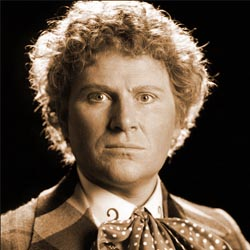

|  |
The Sixth Doctor was portrayed by actor Colin Baker. The Sixth Doctor's brightly coloured, mismatched clothes and brash, overbearing personality set him apart from all his previous incarnations. In some ways he was hearkening back to the initial undertones of untrustworthiness of the First Doctor. The Sixth Doctor appeared in three seasons. His first appearance was at the end of the final episode of The Caves of Androzani, which featured a regeneration of the Fifth Doctor. The Sixth Doctor's era was marked by the decision of the BBC controller Michael Grade to put the series on an 18-month "hiatus" between seasons 22 and 23. |